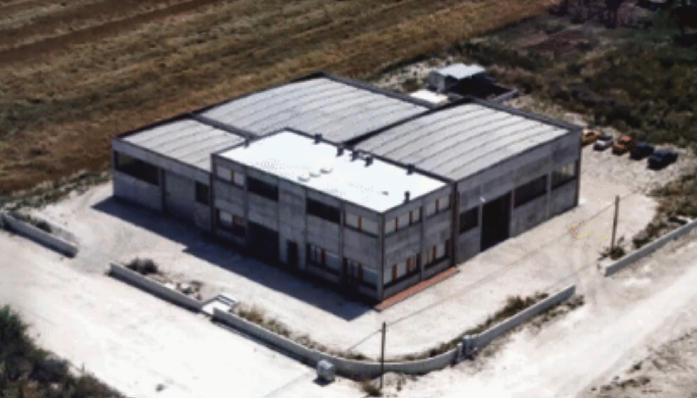

Meccanica Berluti è un'azienda a conduzione familiare specializzata nella produzione e nell'assemblaggio conto
terzi di componenti meccanici su disegno del cliente.

Fondata nel 1998, nasce dall’esperienza e dalla passione di Mario Berluti, che ha trasmesso i suoi valori e la sua
competenza ai figli Andrea e Federico.
La nostra storia affonda le radici negli anni '70, quando Andrea e Federico, dopo un periodo da dipendenti presso la OMAS S.p.A., ebbero l’opportunità – grazie alla fiducia di Sbrollini e Antognoni (titolari di OMAS) – di fondare insieme a Mario Olivetti la OMUS nel 1972.
Da questa esperienza imprenditoriale è poi nata Meccanica Berluti.
La nostra storia affonda le radici negli anni '70, quando Andrea e Federico, dopo un periodo da dipendenti presso la OMAS S.p.A., ebbero l’opportunità – grazie alla fiducia di Sbrollini e Antognoni (titolari di OMAS) – di fondare insieme a Mario Olivetti la OMUS nel 1972.
Da questa esperienza imprenditoriale è poi nata Meccanica Berluti.

Oggi realizziamo lavorazioni meccaniche di precisione e ricambi speciali per diversi settori industriali. I nostri
principali clienti sono costruttori di macchine utensili, impianti di produzione, sistemi di packaging e aziende
operanti nella meccanica generale.